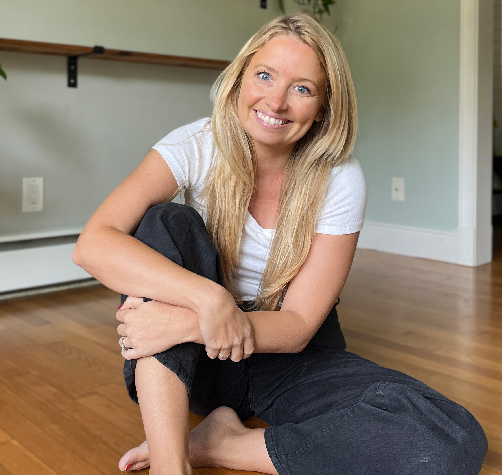

Minimal Ease Youtube Videos!
Simple Steps to Great Success
.png)
5 Things Organized People Do
As a Messy Person I have Learned to Keep an Organized Home! Here are 5 Things I have Learned over 5 Years of Minimalism that Help me Maintain a Clutter Free Home!
.png)
5 things to declutter before 2025
5 Easy Areas You Need to Declutter This Season! Are Your Ready??.
About Me
During my childhood, I always harbored dreams of possessing an enormous wardrobe brimming with clothes and every conceivable accessory. Consequently, I indulged in this desire for some time. However, what I eventually learned was that consumerism is an insatiable thirst. This realization became abundantly clear when I became a first time mom.
The Motivation
The burden of managing all the clutter and the associated cleaning and maintenance became overwhelming. It was during my darkest moments that I stumbled upon minimalism, and it genuinely rescued me. In the ensuing years, I've discovered the art of contentment and living with a more deliberate purpose. I'm passionate about sharing my minimalist journey because I've personally experienced how embracing a simpler life can profoundly transform one's existence.